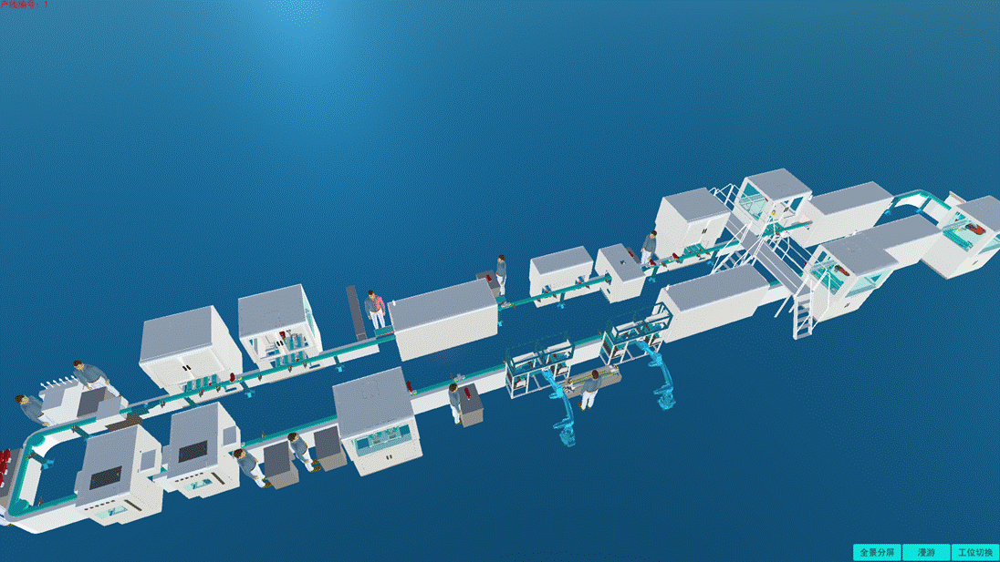
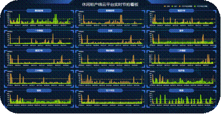

面向自动化制鞋产线的智能制造云服务平台
某制鞋企业采用了我院为其设计规划的整体工厂自动化解决方案，搭载了国产数控系统、机器人喷胶系统、视觉检测系统、工业软件系统、云平台服务系统、MES生产管理系统、基于三维虚拟仿真的“数字化双胞胎”等技术。实现了生产线中各设备间互联互通、生产线制造信息化管理、远程故障诊断、工艺参数包传输等功能，提升了工厂的智能化水平，建立了真正意义上的“智慧工厂”。

智能化工厂布局图
1）休闲鞋生产线云平台服务系统
本系统包括：信息采集系统、质量检测系统、云平台服务系统、虚拟工厂装控系统。可实现加工过程实时监控和动态演示、生产线信息化管理、生产线系统的远程故障报警与诊断、数据采集传输研究及应用以及生产线控制系统的可靠性设计与制造的关键技术等功能。

2）基于实时数据驱动的数字双胞胎技术应用
基于PLM平台和虚拟工具集，利用产线实时数据驱动，建立虚拟工厂模型，此模型既是数据分析的基础，又是生产过程虚拟监控的平台。优化生产组织方式和重要的生产参数。同时通过数据驱动的动态仿真机制，实现实时生产数据的模拟可视化监控，查看生产计划执行状态、生产历史和生产绩效等。

3）休闲鞋生产线云平台实时看板

4）休闲鞋生产线云平台统计看板

5）休闲鞋生产线云平台实时节拍看板
